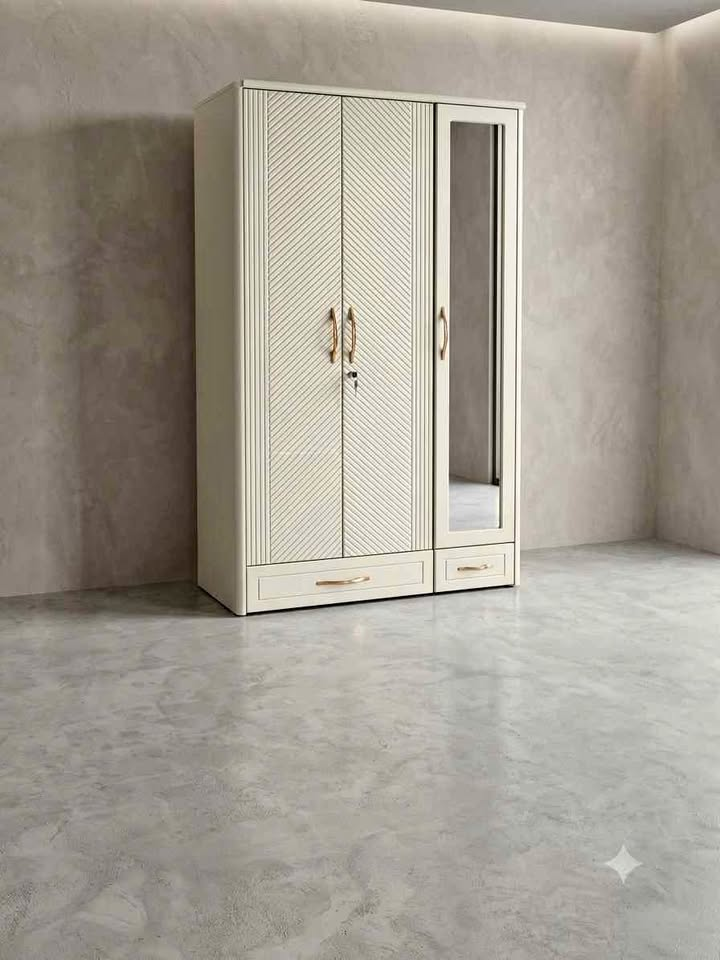

In high-rise apartments across Delhi NCR, finding space for a dedicated puja room is often impossible. Yet, the mandir remains the spiritual and emotional heart of the Indian home. Modern urban homeowners face a unique challenge: how to design a sacred sanctuary that honors centuries-old Vastu principles while fitting seamlessly into a sleek, contemporary living room or foyer.
1. Key Vastu Rules for Apartment Mandir Placement
Before choosing a temple design, ensure you consider these 3 core Vastu guidelines:
- The North-East Zone (Ishanya): The ideal direction for temple placement is the North-East corner of the apartment, followed by the East or North.
- Elevated Altar Level: The deities' feet should ideally align at the worshipper's chest height when standing or sitting in meditation.
- Avoid Shared Walls with Bathrooms: A temple must never share a back wall with a washroom or be placed directly under a staircase.
Grand Architectural Pooja Mandir
Ornate Shikhar Crown • Lower Storage Drawers • Retractable Bhog Slider • Fade-Proof PU Polish
2. Practical Features Every Apartment Mandir Needs
A temple shouldn't just look divine—it must accommodate the daily rituals of your family without cluttering your living space:
- Pull-Out Bhog Tray: A concealed telescopic slider under the main deck lets you place heavy brass diyas, prasad bowls, and incense without staining the wood.
- Dedicated Samagri Drawers: Deep lower drawers designed specifically to hold cotton wicks, camphor, holy books, and daily pooja brassware out of sight.
- Warm Backlit Jali Cutouts: Precision laser-cut Om, Gayatri mantra, or geometric jali patterns illuminated by heat-safe warm LEDs create an ethereal, calming glow at dusk.

Modern Compact Wooden Home Temple
Space-Optimized Footprint • Warm Amber Underglow • Storage Base • Sacred Teak Finish
WhatsApp Quote3. Protective Polish: Resisting Diya Smoke & Ghee Spills
Standard oil polishes and cheap varnishes blacken quickly when exposed to daily diya smoke and ghee spills. In our Delhi workshop, we coat every temple with heat-resistant, non-porous PU polish that wipes clean with a damp microfiber cloth, keeping the wood pristine for decades.